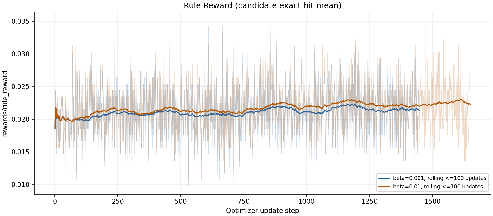
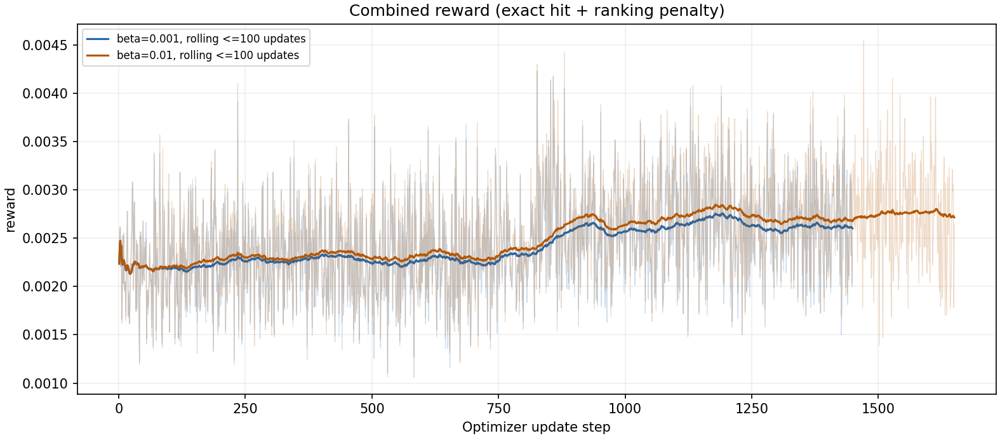
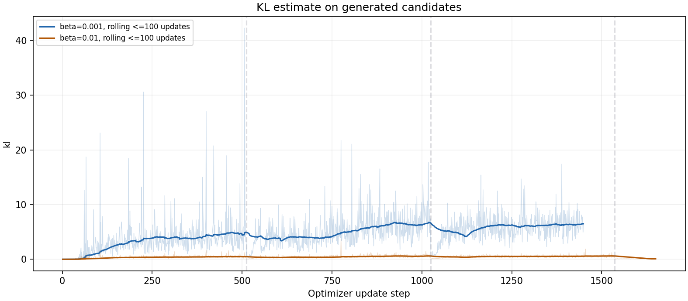
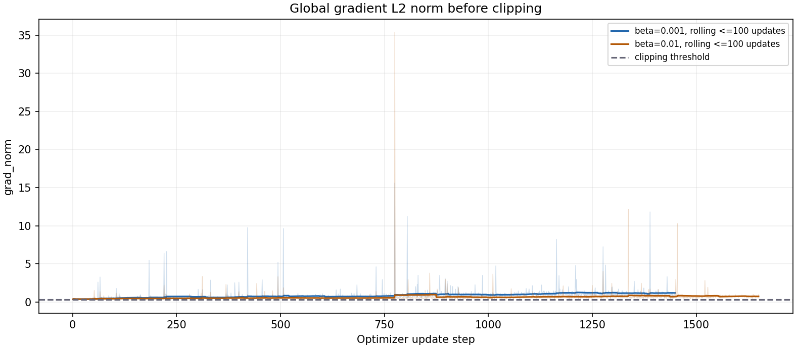
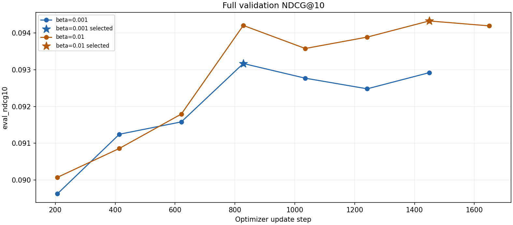

Industrial RL：beta=0.001 与 beta=0.01 对照
已重算双方全部测试预测并校验输入、起点、训练参数及运行环境。差值单位为百分点。
推荐 beta=0.01，仅依据验证集 NDCG@10。
| 实验 | beta | 训练步数 | epoch | 所选检查点 | 验证NDCG@10 | 训练秒数 |
|---|
| baseline | 0.001 | 1449 | 1.75671 | checkpoint-828 | 9.31693% | 5722.56 |
| candidate | 0.01 | 1650 | 2 | checkpoint-1449 | 9.43276% | 6516.9 |
观测与解释
- 仅 beta 改为0.01；同一SFT起点、G=16、训练数据、优化参数、运行镜像和DeepSpeed修复均已核对。
- 预期：更强KL约束可降低概率漂移；召回和排序效果是否提高需由验证与测试数据判断。
- KL比较使用双方共同优化器步数；各自末100步所处参考模型同步阶段可能不同。
- Rule Reward为候选精确命中均值；Combined reward还包含排名惩罚，两者分别绘图。
- Grad Norm为裁剪前的全模型L2范数，超过0.3不代表实际更新幅度等于日志数值。
- 测试集只作结果报告；推荐仅按完整验证集NDCG@10，平分时保留beta=0.001。
- 行为冷商品按训练历史与目标中未出现的商品ID判定；SID别名仍可能共享。
- 冷样本只有147条，一次命中使HR改变约0.6803个百分点；少数命中变化不证明稳定提升。
- 每组只训练一个随机种子；此对照描述观测结果，不提供显著性或跨种子稳定性结论。
共同训练步区间：{'count': 1449, 'first': 1, 'last': 1449}；KL均值降低：True；验证与测试@10均未下降：False。
同一步数区间训练统计
| 指标 | beta=0.001均值 | beta=0.01均值 | beta=0.001最大 | beta=0.01最大 |
|---|
| rewards/rule_reward | 0.0210792 | 0.0216169 | 0.0341797 | 0.0341797 |
| reward | 0.00242327 | 0.00248442 | 0.00423084 | 0.00443353 |
| kl | 4.77736 | 0.442071 | 42.3046 | 3.71135 |
| grad_norm | 0.868199 | 0.603421 | 15.6024 | 35.3622 |
| hit_group_rate | 0.337267 | 0.34587 | 0.546875 | 0.546875 |
完整测试与冷商品
| 分组 | 样本 | K | 0.001 HR | 0.01 HR | 变化pp | 0.001 NDCG | 0.01 NDCG | 变化pp | 0.001命中 | 0.01命中 |
|---|
| overall | 4533 | 1 | 5.71366% | 5.64747% | -0.0661813 | 5.71366% | 5.64747% | -0.0661813 | 259 | 256 |
| overall | 4533 | 3 | 8.53739% | 8.69182% | 0.154423 | 7.33349% | 7.38627% | 0.052786 | 387 | 394 |
| overall | 4533 | 5 | 10.80962% | 10.85374% | 0.0441209 | 8.27148% | 8.27289% | 0.00141433 | 490 | 492 |
| overall | 4533 | 10 | 13.78778% | 13.76572% | -0.0220604 | 9.23379% | 9.21269% | -0.0210925 | 625 | 624 |
| overall | 4533 | 20 | 17.22921% | 16.89830% | -0.330907 | 10.10586% | 10.00292% | -0.102941 | 781 | 766 |
| overall | 4533 | 50 | 21.95014% | 21.66336% | -0.286786 | 11.03917% | 10.94891% | -0.0902556 | 995 | 982 |
| behavior_warm | 4386 | 1 | 5.90515% | 5.83675% | -0.0683995 | 5.90515% | 5.83675% | -0.0683995 | 259 | 256 |
| behavior_warm | 4386 | 3 | 8.82353% | 8.98313% | 0.159599 | 7.57927% | 7.63383% | 0.0545552 | 387 | 394 |
| behavior_warm | 4386 | 5 | 11.17191% | 11.21751% | 0.0455996 | 8.54870% | 8.55016% | 0.00146173 | 490 | 492 |
| behavior_warm | 4386 | 10 | 14.22709% | 14.20429% | -0.0227998 | 9.53667% | 9.51487% | -0.0217994 | 624 | 623 |
| behavior_warm | 4386 | 20 | 17.78386% | 17.44186% | -0.341997 | 10.43797% | 10.33158% | -0.106391 | 780 | 765 |
| behavior_warm | 4386 | 50 | 22.61742% | 22.32102% | -0.296398 | 11.39383% | 11.29961% | -0.094217 | 992 | 979 |
| behavior_cold | 147 | 1 | 0.00000% | 0.00000% | 0 | 0.00000% | 0.00000% | 0 | 0 | 0 |
| behavior_cold | 147 | 3 | 0.00000% | 0.00000% | 0 | 0.00000% | 0.00000% | 0 | 0 | 0 |
| behavior_cold | 147 | 5 | 0.00000% | 0.00000% | 0 | 0.00000% | 0.00000% | 0 | 0 | 0 |
| behavior_cold | 147 | 10 | 0.68027% | 0.68027% | 0 | 0.19664% | 0.19664% | 0 | 1 | 1 |
| behavior_cold | 147 | 20 | 0.68027% | 0.68027% | 0 | 0.19664% | 0.19664% | 0 | 1 | 1 |
| behavior_cold | 147 | 50 | 2.04082% | 2.04082% | 0 | 0.45730% | 0.48524% | 0.0279419 | 3 | 3 |
训练曲线
细线为原始观测，粗线为最多100步移动均值。验证曲线仅包含训练时评估，星标为所选检查点；训练结束后的重载评估不进入曲线。KL虚线标记参考模型同步。
Rule Reward (candidate exact-hit mean)

Combined reward (exact hit + ranking penalty)

KL estimate on generated candidates

Global gradient L2 norm before clipping

Full validation NDCG@10

完整JSON与校验哈希 · 逐指标CSV